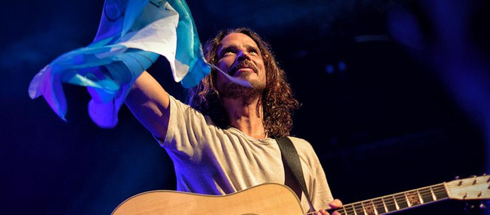

Shows: sus pasos en el escenario

Chris Cornell en Argentina
Chris Cornell tuvo una relacion muy especial con Argnetina, presentándose en varias ocaciones tanto como solita como con sus bandas.
Su despedida del público argentino ocurrió apenas unos meses antes de su fallecimiento, con una serie de shows íntimos que quedaron grabados en la memoria de sus seguidores.
Cronología de sus visitas principales
- Diciembre de 2007(Personal Fest):Su debut en el país como solista. Se presentó en el CLub Ciudad de Buenos Aires ante una multitud, donde interpretó temas de su carrera solista, Soundgarden y Audioslave.
- Noviembre de 2011(Teatro Gran Rex):Regresó con su gira acústica "Songbook", ofreciendo un show intimo que resaltó su poderoza voz.
- Abril de 2014(Lollapalooza Argentina):Esta vez llegó liderando el regreso de Soundgarden. Fue la única vez que la banda se presentó en suelo argentino.
- Diciembre de 2016(Teatro Colón y Gran Rex):Su última visita. Presentó su tour acústico "Higher Truth" con dos funciones históricas en el Teatro Colón y una fecha en el Gran Rex.